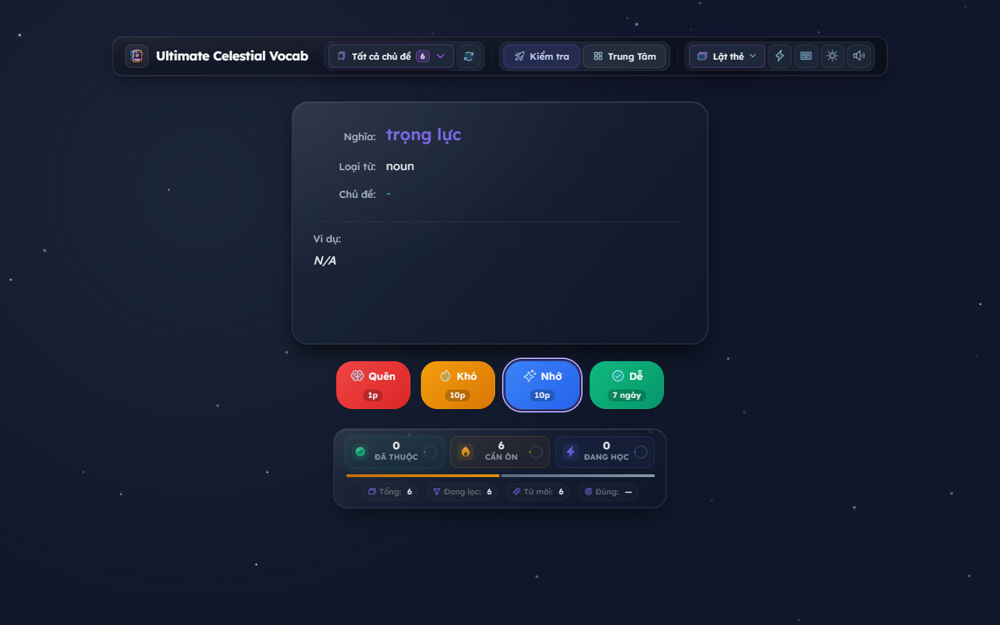
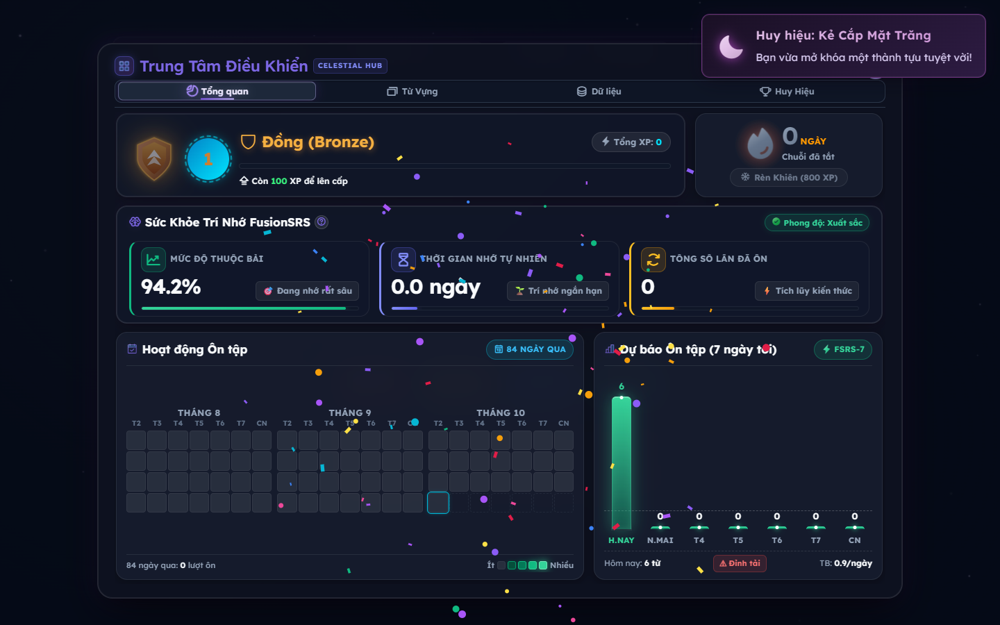

Mọi con số dưới đây là đo được (script trong repo hoặc Chrome headless), không phải ước lượng. Mỗi thay đổi đều kèm test: từ 128 lên 241 test, và có golden test khoá toàn bộ engine FSRS để lần sau ai sửa công thức là CI đỏ ngay.
Cùng một sản phẩm, nhưng nhiều tính năng hơn (App Check, TTS, cap ôn/ngày, báo cáo) mà vẫn nhẹ hơn ở mọi hạng mục.
Không phải test cho có: mỗi đợt thêm test khoá đúng hành vi vừa sửa, gồm cả test bất biến 200 tổ hợp có seed.
Đây là phần đáng giá nhất của đợt nâng cấp. Không lỗi nào trong số này hiện ra khi bạn bấm thử app vài phút: chúng cần dữ liệu lớn, thời gian dài, hoặc điều kiện đặc biệt (múi giờ có DST, mã sync gõ sai, chuỗi chèn HTML).
Code cũ cắt reviewLogs theo số row nhưng không có ngưỡng cho dictionary cardId.
Với 10.000 id dài 96 ký tự, document phình lên 115% trần 1 MiB. Vượt trần thì Firestore từ chối
mọi lần ghi sau đó — app không tự khỏi, người dùng chỉ thấy “không đồng bộ được”.
new Date(srsDueDate) với kiểu chuỗi số hoặc Firestore Timestamp cho
Invalid Date → thẻ bị bỏ qua không báo gì. Người dùng thấy tuần này “rảnh”
trong khi thật ra có thẻ phải ôn.
Bucket tính bằng /86400000. Ngày đổi giờ dài 23h hoặc 25h → mọi thẻ sau ngày đó
lệch 1 cột, và thẻ hạn +7 ngày lọt vào cột 6. Việt Nam không có DST nên không thấy —
nhưng người dùng ở EU/US/AU đều bị.
Nội dung do người dùng nhập (hoặc người khác chia sẻ qua mã sync) được nhét thẳng vào
innerHTML. Đã escape ở 6 điểm render + comment cảnh báo ngay tại API
showPopup() để không tái diễn.
Bấm “Nhớ” lần đầu là thẻ thành Mastered hẹn 10,9 ngày; “Dễ” hẹn 21 ngày; công thức còn thổi interval lên 38.147 ngày (104 năm). Heuristics chênh tới 7,97× giữa “cat” và “break the ice”. Badge “CỰC KHÓ” bật cho mọi thẻ khó chứ không phải thẻ đang chống lại bạn.
Đăng nhập thất bại bị hiểu là “chưa có tài khoản” nên app tự tạo một không gian mới rỗng, rồi báo thành công. Nút “Liên kết thiết bị” còn gọi một hàm không tồn tại. Nay: chỉ mã do chính app sinh mới được tự tạo, mã người dùng dán thì không bao giờ.
Thẻ mới giờ đi đúng 3 bước ghi nhớ ngắn hạn trước khi vào lịch dài hạn — giống cách trí nhớ thật hoạt động, và giống chuẩn FSRS. Khoảng cách giữa từ dễ nhất và từ khó nhất cũng được thu về mức hợp lý.
unsafe-inline khỏi script-src + chuyển thành header thật trên Hosting. Đây là lớp chặn XSS cuối cùng.npm run budget): entry 82 kB · firebase 120 kB · CSS 350 kB · dist 2,7 MB.npm run verify, 29 s). Trước đó 2 script này đã chết từ lâu.backdrop-filter / 1225 phần tử — test chạy thật, không còn là assertion chết.!important 1.920 → 286 (riêng style.css 1.624 → 188) bằng @layer + hạ specificity — và 32/32 ảnh giao diện trùng khớp, 0 pixel khác.verify khác vẫn chết vì gọi hook chỉ có ở DEV; 1 cái hỏng âm thầm (ảnh "Hub" thực chất là màn học).

pre-upgrade-2026-10-26 · branch backup · zip source./assets/** immutable 1 năm; bỏ preload âm thanh lúc khởi động.unsafe-inline khỏi script-src; App Check sẵn sàng, không nhúng debug token vào bundle prod.backdrop-filter vì tool verify mobile cần.tools/render_report.mjs render từng trang bằng Chrome headless, font dùng chính woff2 của app nên ảnh khớp sản phẩm.package.json bằng PowerShell 5.1 Set-Content -Encoding utf8 → dính BOM → vite-plugin-pwa chết vì JSON.parse. Quét 8 file tracked, strip sạch.lang="en" 3 chỗ, focus sau khi lật chỉ khi bàn phím, nhãn mobile hết cắt, safe-area.docs/SMOKE_TEST.md.dist/version.json. Test mobile backdrop-filter nay chạy thật: 0 vi phạm / 1225 phần tử.docs/SECURITY_KEY_ROTATION.md + mục cảnh báo trong README: hạn chế referrer → xoay key → bật App Check; ghi rõ đây là việc chưa làm.state.js: 1.621 → 616 dòng, 10 modulesleep(1200) trước performance.now()).io.js sang chunk lazy: 81,85 → 74,93 kB gzip. Guard 2 lớp chống gắn trùng listener — CDP: mở/đóng 3 lần rồi Export ⇒ chạy đúng 1 lần.!important + safe-area xoay ngang@layer và hạ specificity (không xoá rule). Thêm env(safe-area-inset-left/right): phần tử bị tai thỏ che 54 → 0. Chứng minh bằng 32 ảnh so sánh từng pixel.verify khác trong
tools/ vẫn chết, và T2.6 (đổi autoUpdate → prompt) cố ý chưa làm
vì chạm đúng chỗ vừa sửa reload loop.